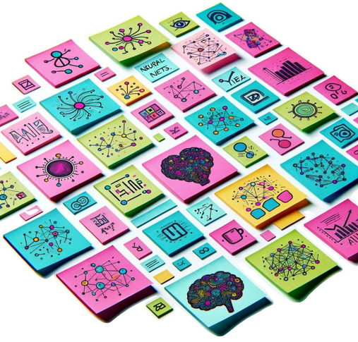
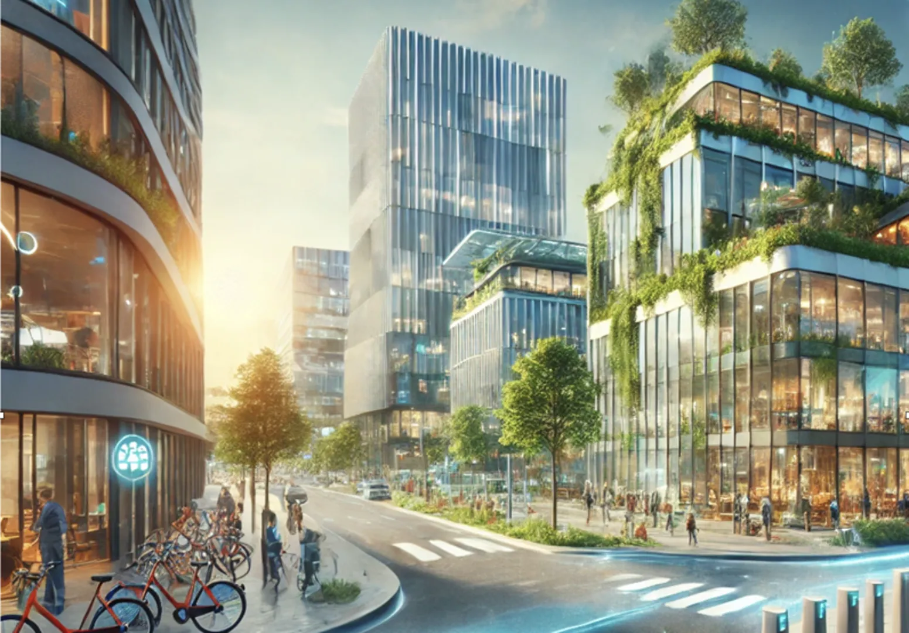
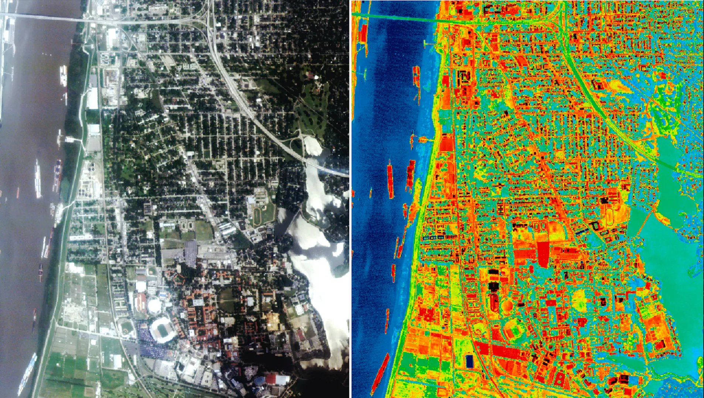
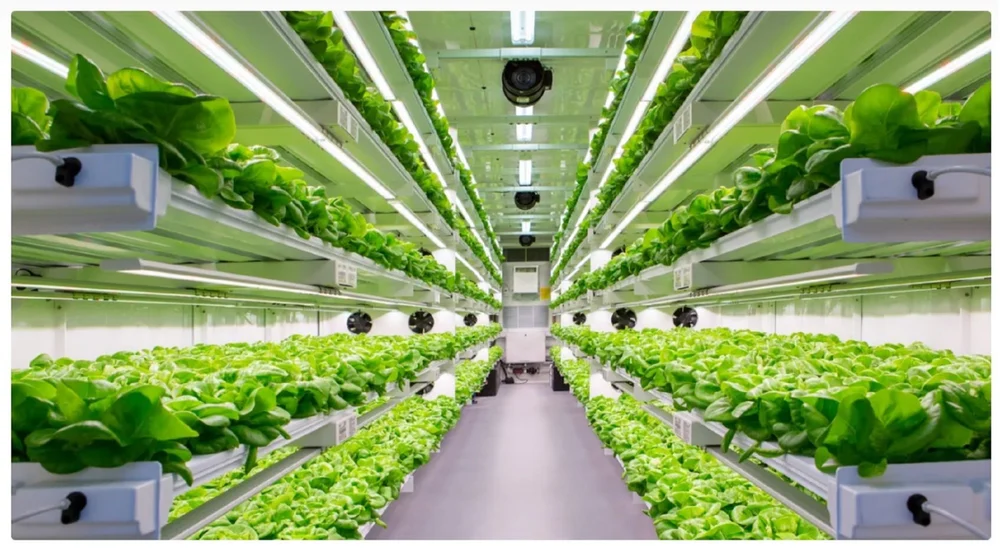
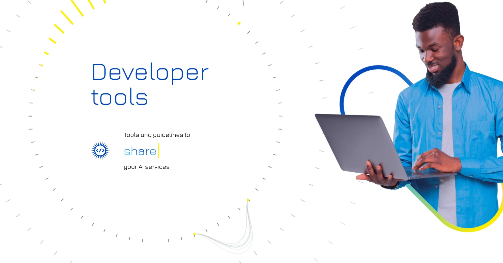
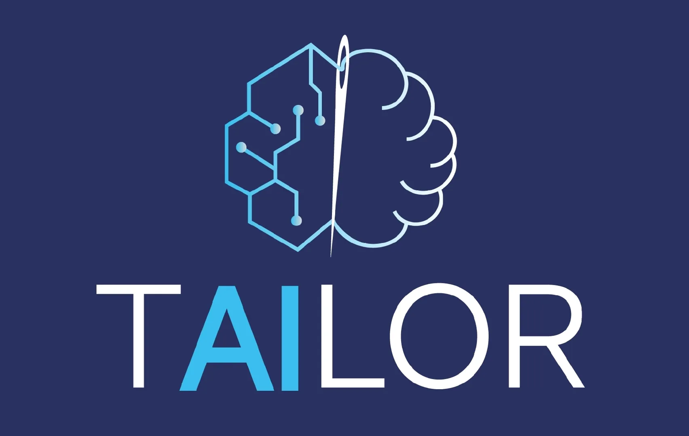
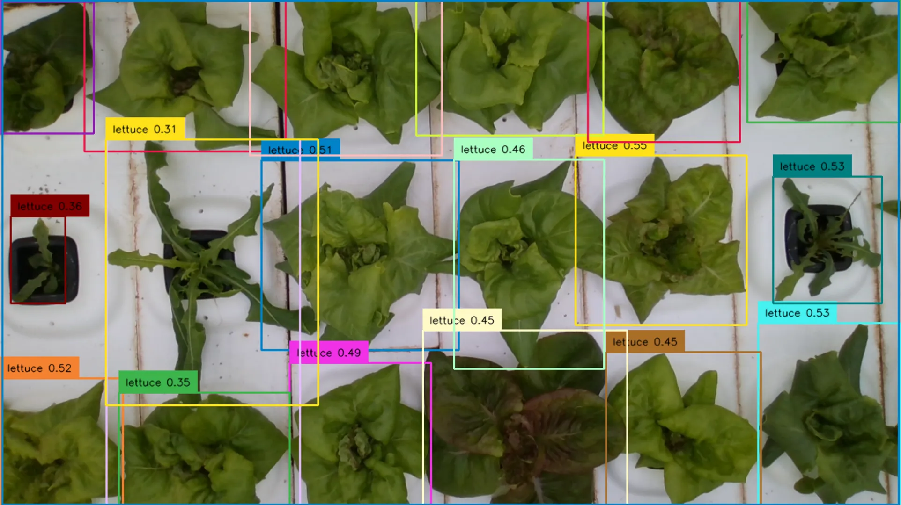
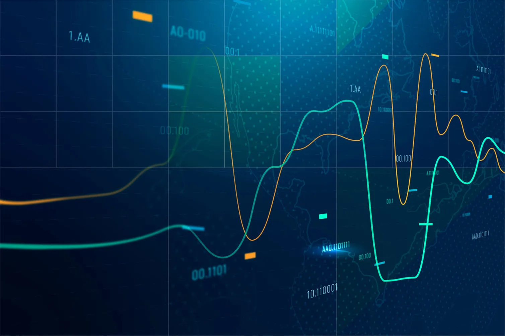

2025
- ELLIOT: European Large Open Multi-modal Foundation Models
EU Horizon Europe (2025-2030)
ELLIOT aims to develop the next generation of Multimodal Space-Time Foundation Models. More info soon!
Project website - OpenEuroLLM: Open European Family of Large Language Models
EU Horizon Europe (2025-2029)
OpenEuroLLM aims to build an entirely open family of Large Language Models, publishing all data, code, and models in an open way.
Project website - LLMs4EU: Large Language Models for the European Union
Digital Europe (2025-2029)
LLMs4EU is OpenEuroLLMs sister project, aiming to develop infrastructure to robustly evaluate and exploit open LLMs. More info soon!
Project website - MOSAIC: Electronic Components and Systems for our Automated Digital Future
EU Horizon Europe (2025-2029)
MOSAIC aims to develop the next generation of electronic components offering superior cognitive system intelligence, efficiency, and robustness. More info soon!
Project website  Assessment of Learning technologies and Frameworks for Intelligent and Ethical AI
Assessment of Learning technologies and Frameworks for Intelligent and Ethical AI
EU Horizon Europe (2025-2028)
ALFIE aims to harness AI responsibly with essential skills, ethical practices, and people-centered, trustworthy AI. Our AutoML platform streamlines AI evaluation, ensuring performance aligns with ethical standards and societal values. Together, we’ll build a transparent, democratic AI ecosystem for the public good.
Project website- AI Pathfinder
EDIH (2025-2026)
Connecting Dutch SMEs with expertise to build practical AI solutions that addresses their specific challenges.
Project website
2024
- SYNERGIES
EU Horizon Europe (2024-2027)
SYNERGIES will enhance the development, training, virtual testing, and validation of cooperative, connected and automated mobility systems.
Project website - EDIH-SNL
EU Digital Europe (2024-2025)
The European Digital Innovation Hub South Netherlands aims to accellerate the digital transformation of manufacturing and maintenance SMEs.
Project website - Automated Machine Learning for all
Dutch Science Foundation, Open Science Fund (2024-2025)
This project leverages OpenML and AutoML to automatically build AI models and provide intuitive reports to help scientists make progress across many different fields.
Project website
2022
- Machine Learning for building renovations
Dutch Government (2022-2026)
To make cities more sustainable, this project uses machine learning to predict the energy performance of buildings and optimize renovation strategies.
Project website - Digital Twin of a Vertical Farm
Dutch Science Foundation, Merian Fund (2022-2026)
Vertical farming allows us to grow more food using less resources. We use AI to model plants in 3D to understand how different light, CO2 and temperature scenarios impact plant growth and photosynthesis.
Project website - AI4Europe
EU Horizon Europe (2022-2025)
The AI-on-Demand platform (AIoD) is a community-driven platform designed to empower European research and innovation in Artificial Intelligence (AI).
Project website
2020
 Stairway to AI
Stairway to AI
EU Horizon 2020 (2020-2024)
The StairwAI project aims to provide a matchmaking service for users of the AI-on-Demand platform to easily find AI assets, experts, knowledge, hardware resource providers and much more.
Project website Continuous monitoring in personal and physical health
Continuous monitoring in personal and physical health
ITEA Inno4Health (2020-2024)
Inno4Health stimulates continuous monitoring in personal and physical health, improving patient care and athlete performance.
Project website Multi Modal Photochemistry
Multi Modal Photochemistry
Dutch Science Foundation, TTW (2020-2024)
In this project, we aimed to optimize the photochemical synthesis of complex molecules using machine learning.- TAILOR Network of AI Excellence
EU Horizon 2020 (2020-2024)
TAILOR is one of the first European networks of research excellence in AI, focussing on Trustworthy AI.
Project website - SkyHigh: Leveraging AI in Vertical Farming
Dutch Science Foundation (2020-2024)
Vertical farming allows us to grow more food using less resources. We use AI to track plant growth non-invasively and optimize growth.
Project website
2019
 Educational platform for machine learning and medical image analysis
Educational platform for machine learning and medical image analysis
TU Eindhoven, BOOST (2019-2025)
AI education should be scalable and engaging. This project aims to leverage OpenML for AI-related university courses, challenging students to build the best AI models in an engaging environment.
Project website The AutoML Gym
The AutoML Gym
Amazon Research Award (2019-2020)
This project aimed to evolve AutoML systems (agents) in an environment of increasingly difficult tasks, in which AutoML agents can be uploaded as docker images and run on AWS infrastructure.
Project website
2017
- Dynamic Data Analytics through Automatically Constructed Machine Learning Pipelines
Dutch Science Foundation, Commit2Data (2017-2021)
This project created new online automated machine learning pipelines, new methods for multi-variate time series prediction, and new approaches for early stage Parkinson's disease diagnostics from videos.
Project website  Data Driven Discovery of Models
Data Driven Discovery of Models
DARPA (2017-2021)
The first DARPA challenge on AutoML, the Data-Driven Discovery of Models (D3M) program developed automated methods to create empirical models of real, complex processes. It also lead to the creation of the AutoML benchmark.
Project website
2016
 A Cloud-Based Platform for AutoML
A Cloud-Based Platform for AutoML
Microsoft Azure Research Award (2016-2016)
With sponsorship from Microsoft, we ran the first large-scale machine learning benchmarks on Azure, which are still accessible on OpenML today.
Project website
2012
 Massively Collaborative Machine Learning
Massively Collaborative Machine Learning
Dutch Science Foundation, Free Competition (2012-2016)
This project created OpenML, an open science platform for sharing data, code, and experiments in machine learning.
Project website MLOpen Machine Learning Platform
MLOpen Machine Learning Platform
EU PASCAL Harvest (2012-2013)
This exploratory project brought together scientists and engineers to create an open machine learning platform, forming the foundation of the OpenML community.